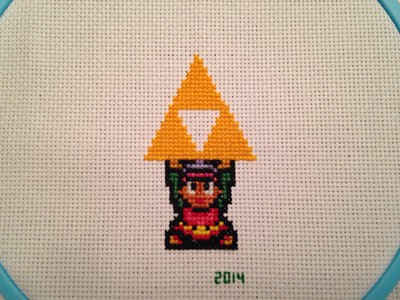

Zelda Cross Stitch

Last night I finished cross stitching this. I didn't measure, but I think it took me around five hours. Why did I all of a sudden decide to cross stitch something? Part of it had to do with my mother cross stitching when I was young, and another part probably had to do with my daughter getting a small sewing kit for Christmas. In that kit was a cross stitch sampler, and that curiosity of cross-stitching was re-ignited. I didn't want to make a Precious Moments cross stitch, so I went to a theme I could enjoy - Zelda. I'll spare you too many details, but I can at least leave you with these few resources if you want to maybe give it a shot yourself:
- SpriteStitch.com - A respectable source for various patterns. What's even better is that people will happily convert images to patterns for you.
- Here is the pattern I used. Obviously I didn't use each of the pieces. I just wanted Link hoisting the Triforce.
- If you want some pattern they don't offer, look for some video game sprites, put something together in Paint, and ask nicely for somebody to make it for you.
- Spend some time on YouTube watching how to cross stitch. There are lots of videos, and it's pretty easy to get going.
I'm already debating what my next project might be. I doubt this will become my new passion, but it's a good way to unwind, and have something to show for your time.
- Prior: G2 20120807
- Next: I Shure Love These Earphones